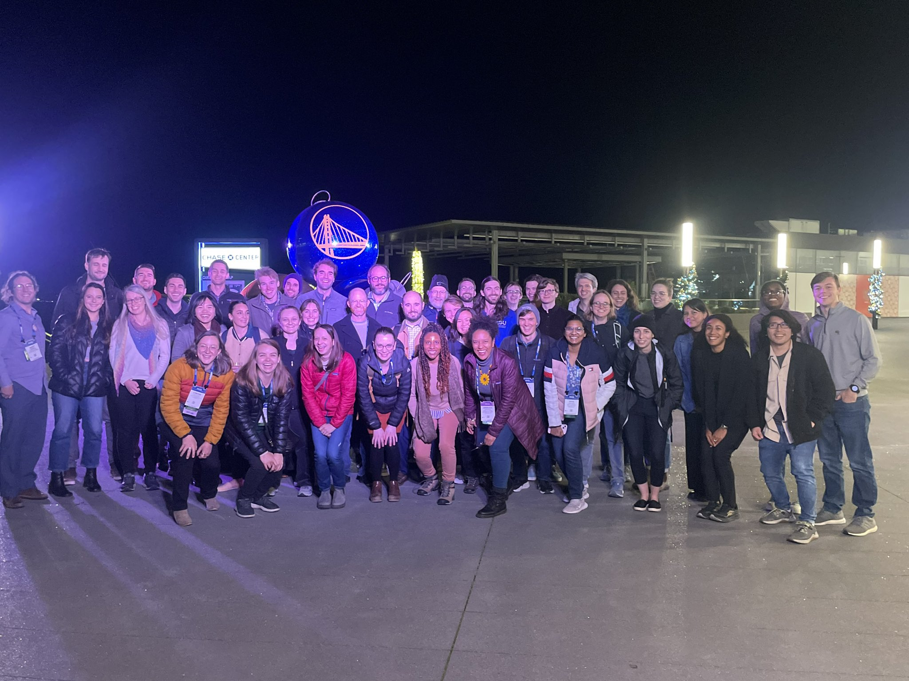
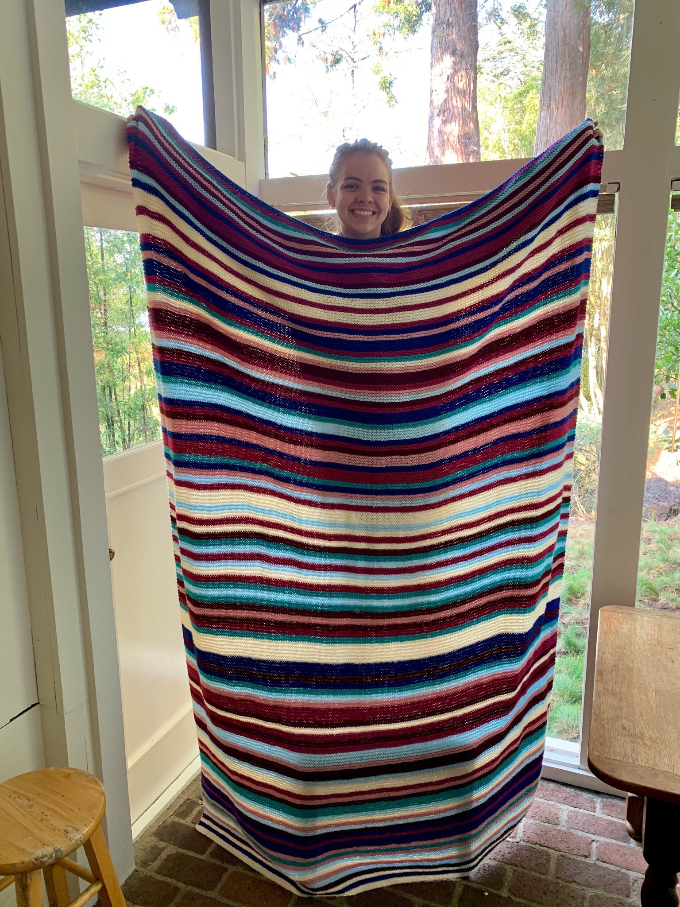
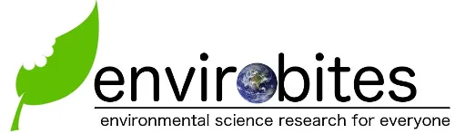

Outreach and Service
Beyond my research, I am also passionate about supporting and empowering the next generation of scientists and problem solvers. I have been actively involved in a number of different organizations and efforts to help to this. Below are a few highlights but you can check out my CV for a full list of what I've been working on in these areas.
Civil and Environmental Engineering for Anti-Racism
 During my time at UC Berkeley, I helped found and co-lead the student organization Civil and Environmental Engineers for Anti-Racism, which focuses on organizing and acting to address systemic and structural racism in our community and field more broadly. As a group, created and completed a number of initiatives focused on supporting the student community and catalyzing institutional change.
During my time at UC Berkeley, I helped found and co-lead the student organization Civil and Environmental Engineers for Anti-Racism, which focuses on organizing and acting to address systemic and structural racism in our community and field more broadly. As a group, created and completed a number of initiatives focused on supporting the student community and catalyzing institutional change.
AGU Ecohydrology Technical Committee

Precipitation Stripes Blanket
 In addition to plenty of Netflix and bread baking, I spent part of covid quarnatine making a "precipitation stripes" blanket that shows off the highly variable rainfall of California. Each stripe corresponds to a year, with redder colors indicating years with far below "normal" precipitation and bluer colors showing far wetter years. You can learn more in this twitter thread or find out how to make your own with this guide I put together.
Envirobites Public Science Blog
From 2017-2020 I was a writer and editor for the public environmental science blog envirobites. I wrote a number of articles covering recent publications in environmental science for a general audience. I enjoyed being able to make science more accessible, as well as weaving in as many questionable puns and pop culture references as I could.